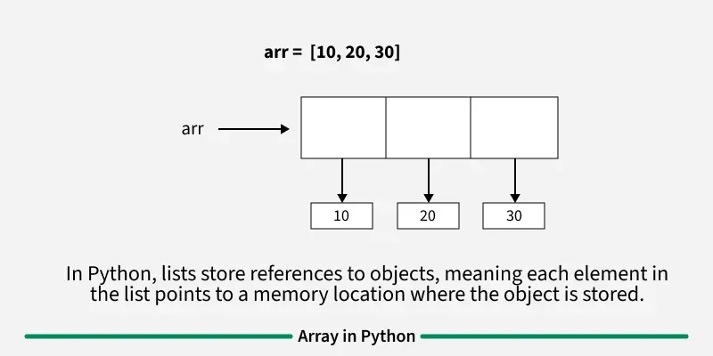
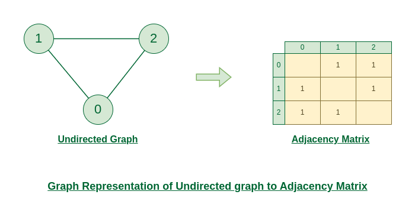

Introduction to C++
C++ is a general-purpose programming language that was developed by Bjarne Stroustrup as an enhancement of the C language to add object-oriented paradigm. It is a high-level programming language that was first released in 1985 and since then has become the foundation of many modern technologies like game engines, web browsers, operating systems, financial systems, etc.
Features of C++
The main features C++ programming language are as follows:
- Simple: It is a simple language in the sense that programs can be broken down into logical units and parts, and has a rich library support and a variety of datatypes.
- Machine Independent: C++ code can be run on any machine as long as a suitable compiler is provided.
- Low-level Access: C++ provides low-level access to system resources, which makes it a suitable choice for system programming and writing efficient code.
- Fast Execution Speed: C++ is one of the fastest high-level languages. There is no additional processing overhead in C++, it is blazing fast.
- Object-Oriented: One of the strongest points of the language which sets it apart from C. Object-Oriented support helps C++ to make maintainable and extensible programs. i.e. large-scale applications can be built.
Bsic syntax
#include < iostream >
using namespace std;
int main(){
cout << "Hello world" << endl;
return 0;
}
Online C++ Compiler
Introduction to Array
Getting Started with Array Data Structure
Array is a collection of items of the same variable type that are stored at contiguous memory locations. It is one of the most popular and simple data structures used in programming.
Basic terminologies of Array
- Array Index: In an array, elements are identified by their indexes. Array index starts from 0.
- Array element: Elements are items stored in an array and can be accessed by their index.
- Array Length: The length of an array is determined by the number of elements it can contain.
Memory representation of Array
In an array, all the elements are stored in contiguous memory locations. So, if we initialize an array, the elements will be allocated sequentially in memory. This allows for efficient access and manipulation of elements.
Types of Arrays on the basis of Dimensions
- One-dimensional Array(1-D Array): You can imagine a 1d array as a row, where elements are stored one after another.
- Multi-dimensional Array: A multi-dimensional array is an array with more than one dimension. We can use multidimensional array to store complex data in the form of tables, etc. We can have 2-D arrays, 3-D arrays, 4-D arrays and so on.
- Two-Dimensional Array(2-D Array or Matrix): 2-D Multidimensional arrays can be considered as an array of arrays or as a matrix consisting of rows and columns.
- Three-Dimensional Array(3-D Array): A 3-D Multidimensional array contains three dimensions, so it can be considered an array of two-dimensional arrays. 
Introduction to Graph
A Graph is a non-linear data structure consisting of vertices and edges. The vertices are sometimes also referred to as nodes and the edges are lines or arcs that connect any two nodes in the graph. More formally a Graph is composed of a set of vertices( V ) and a set of edges( E ). The graph is denoted by G(V, E).
Representations of Graph
Here are the two most common ways to represent a graph : For simplicity, we are going to consider only unweighted graphs in this post.
- Adjacency Matrix
- Adjacency List
Adjacency Matrix Representation
An adjacency matrix is a way of representing a graph as a matrix of boolean (0's and 1's) Let's assume there are n vertices in the graph So, create a 2D matrix adjMat[n][n] having dimension n x n.
Representation of Undirected Graph as Adjacency Matrix:
The below figure shows an undirected graph. Initially, the entire Matrix is initialized to 0. If there is an edge from source to destination, we insert 1 to both cases (adjMat[source][destination] and adjMat[destination][source]) because we can go either way.
Representation of Directed Graph as Adjacency Matrix:
The below figure shows a directed graph. Initially, the entire Matrix is initialized to 0. If there is an edge from source to destination, we insert 1 for that particular adjMat[source][destination].
Adjacency List Representation
An array of Lists is used to store edges between two vertices. The size of array is equal to the number of vertices (i.e, n). Each index in this array represents a specific vertex in the graph. The entry at the index i of the array contains a linked list containing the vertices that are adjacent to vertex i.